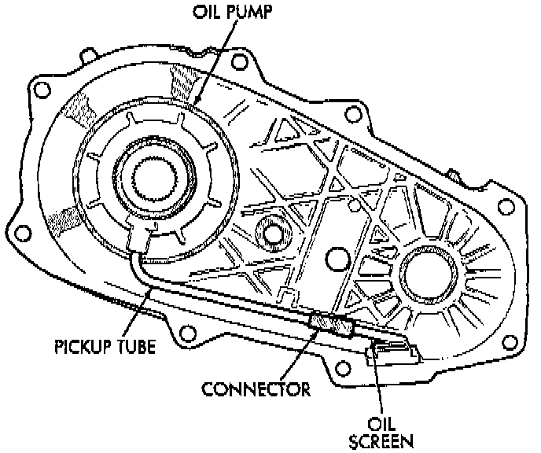
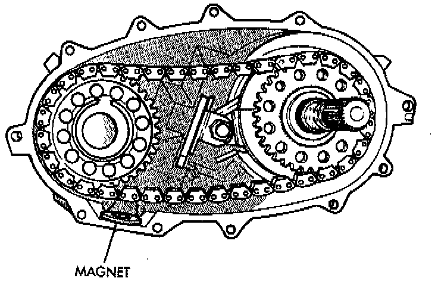

Oil Pump and Rear Case Installation

1. Insert oil pickup tube in oil pump and attach oil screen and connector hose to pickup tube. Then install assembled pump, tube and screen in rear case. Be sure screen is seated in case slot as shown.

2. Install magnet in front case pocket.
3. Apply 3 mm (1/8 inch) wide bead of MOPAR gasket maker or silicone adhesive sealer to seal surface of front case.
4. Align and install rear case on front case. Be sure case locating dowels are in place and that mainshaft splines are engaged in oil pump inner gear.
5. Install and tighten front case-to-rear case bolts to 41 Nm (30 ft. lbs.) torque. Be sure to install a washer under each bolt used at case dowel locations.